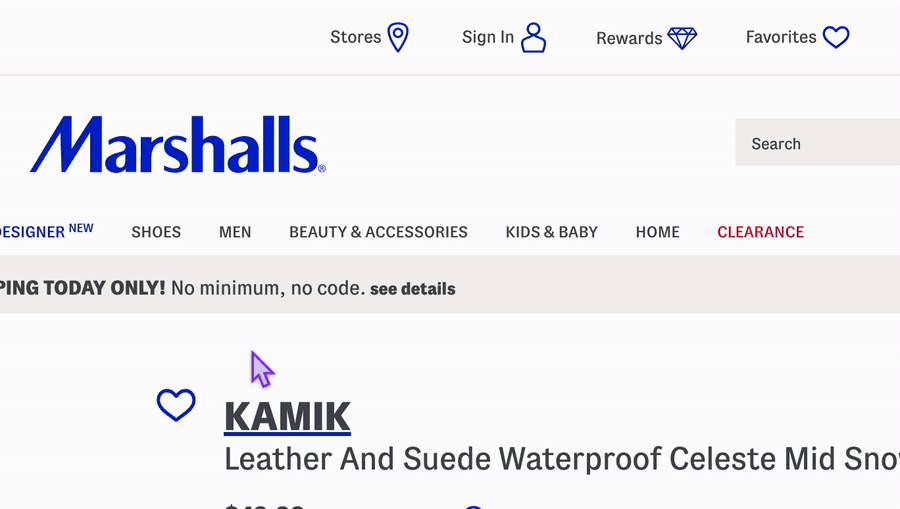

Marshalls
LOCATION
- The heart shaped "Favorite" icon is found upon opening the link to the example Marshlls product
- The icon is located near the center of the page, in between product photo and description.
- In the default state (unfavorited), the icon has a blue border with a white (empty) interior.
TRIGGERS
- Hover ON
- Hover OFF
- Click ON
- Click OFF
FULL MICROINTERACTION ANIMATION
The animation below depicts the microinteraction when the user hovers over the heart icon, clicks to favorite the product, unclicks to unfaforite the product, and hovers off.

RULES
Hover ON
- Cursor changes from an arrow to a pointer hand.
Hover OFF
- Cursor changes from the pointer hand back to the default arrow.
Click ON
- Product changes from unfavorited to favorited in the database.
- Product heart changes from an empty state to a filled state.
- Product heart performs one bounce animation.
- Favorites heart in the top navigation changes from an empty state to a filled state.
- Favorites heart icon in the top navigation also performs one bounce animation, growing then shrinking before returning to its original size.
- Favorites heart in the top navigation performs one bounce animation.
- Favorites counter increases by 1.
- Product is added to the user's saved Favorites.
Click OFF
- Product changes from favorited to unfavorited in the database.
- Product heart changes from a filled state to an empty state.
- Product heart performs one bounce animation.
- Favorites heart in the top navigation changes from a filled state to an empty state.
- Favorites heart in the top navigation performs one bounce animation.
- Favorites counter decreases by 1.
- Product is removed from the user's saved Favorites.
FEEDBACK
Hover ON
- Cursor visually changes from an arrow to a pointer hand.
Hover OFF
- Cursor visually changes from a pointer hand back to an arrow.
Click ON
- Product heart visibly fills with blue.
- Product heart visibly grows and shrinks in one bounce animation.
- Favorites heart in the top navigation visibly fills with blue.
- Favorites heart visibly performs one bounce animation..
- Favorites count visibly increases by 1.
- “Saved!” pop up notification appears.
- No audible feedback is produced.
- No haptic feedback occurs.
- Click OFF
- Product heart visibly returns to its blue outlined state with a white fill.
- Product heart visibly grows and shrinks in one bounce animation.
- Favorites heart in the top navigation visibly returns to its default state.
- Favorites heart visibly performs one bounce animation.
- Favorites count visibly decreases by 1.
- “Saved!” pop up notification disappears.
- No audible feedback is produced.
- No haptic feedback occurs on desktop.
LOOPS
- The favorite/unfavorite interaction can be repeated each time the user clicks the heart.
- Each click triggers one bounce animation before the heart returns to its resting size.
- Clicking the heart when it's favorited returns the snowboots to the unfavorited state in the database.
- There is no set limit to how many times the user can switch between the favorited and unfavorited states..
MODES
- Favoriting the product temporarily activates a confirmation mode that displays a “Saved!” popup near the Favorites area of the top navigation.
- The “Saved!” popup contains a blue heart icon and confirmation text to reinforce that the product was successfully saved.
- The confirmation mode ends when the popup disappears.
Jump Back to Top